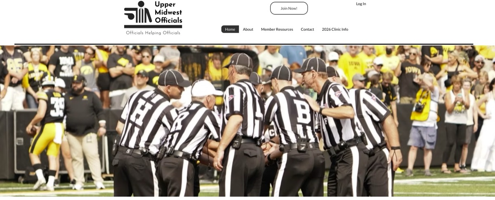
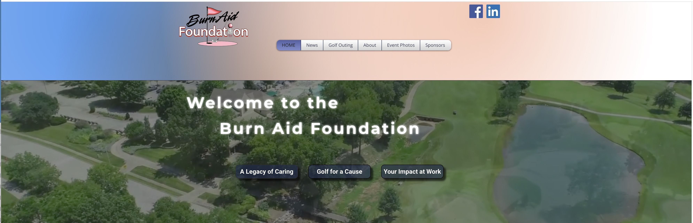
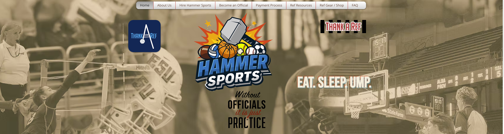
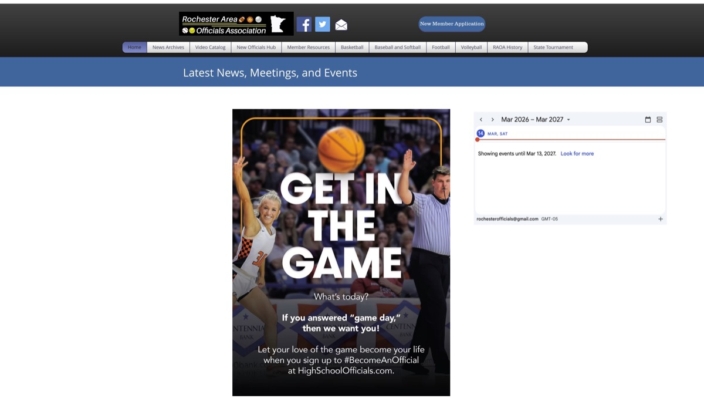
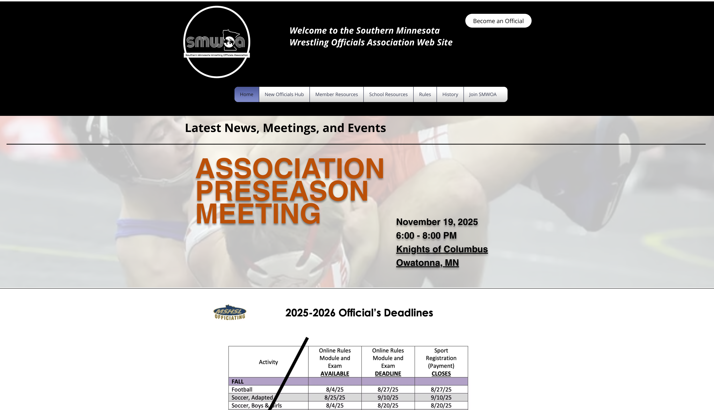

Portfolio
A growing collection of creative and digital work.

Upper Midwest Officials
The UMOA platform manages digital administration for the North Star Football Officiating Clinic, delivering technical Division 1-level instruction. The site streamlines promotional logistics and educational resources designed to advance high-level football officials through an optimized regional training and professional development interface.
Visit Website
Burn Aid Foundation
The Burn Aid Foundation site features a custom 2026 Golf Tournament registration system with dynamic pricing, Stripe integration, and automated data handling. It utilizes a Velo-powered sponsors gallery with conditional logic and a centralized news module for real-time organizational communication and event management.
Visit Website
Hammer Sports
The Hammer Sports project features a custom training video catalog and a streamlined onboarding system. The platform incorporates a dedicated organizational intake portal, a technical uniform guide, and a centralized FAQ resource for professional sports officiating operations.
Visit Website
Rochester Area Officials Association
The RAOA project involved implementing a formalized compensation protocol for game cancellations and postponements, alongside the production of a high-impact recruitment video targeted at prospective officials. The platform serves as a centralized communication hub for organizational updates, annual awards, and membership recognition initiatives to maintain association engagement.
Visit Website
Southern Minnesota Wrestling Officials Association (SMWOA)
The SMWOA project features a structured "Become an Official" guide integrating MSHSL registration and professional compliance tracking. The platform streamlines membership applications and dues management, serving as a centralized hub for upholding officiating standards and facilitating communication between wrestling officials and regional Minnesota league administrators.
Visit Website
The Minneapolis Officials Association
The Minneapolis Officials Association (MOA) project involved developing a formalized digital membership application and dues payment workflow, including a tiered pricing structure for first-year officials. The site infrastructure supports a dedicated recruitment and onboarding process, integrating MSHSL registration requirements and defining long-term administrative roles for organizational website management and content oversight.
Visit Website